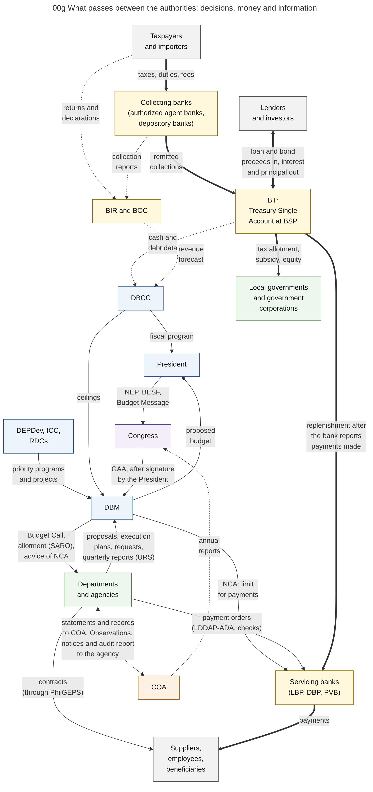

Diagram 00g · Mermaid flowchart
What passes between the authorities: decisions, money and information
Question: For each pair of authorities, what does one give to the other?

What the diagram shows
- Question: for each pair of authorities, what does one give to the other?
- How to read it: three kinds of arrow. Thin solid arrow = a decision or a document that authorizes or requests something. Thick arrow = money. Dotted arrow = information (a report, a record, a finding). An arrow with two heads shows the two things named in its label, one in each direction.
- Scope: national government agencies. The exchanges of local governments and government corporations are in chapters 14 and 15.
- Sources: budget submission and enactment [CONST]. DBCC outputs [DBCC-PAGE]. Budget Call and proposals [NBM156]. Allotment, NCA, plans and reports [NBC599][JC2019-1]. Payment orders and bank replenishment [CL2013-16A]. Collections remitted to the Treasury Single Account [PEFA2025][BTR-SITE]. Releases by BTr to local governments and corporations [NBC599]. Statements to COA [COA-GAS]. COA annual report [CONST IX-D.4].
Code

---
title: "00g What passes between the authorities: decisions, money and information"
config:
flowchart:
wrappingWidth: 460
---
flowchart TB
%% QUESTION THIS DIAGRAM ANSWERS: for each pair of authorities, what does one give to the other?
%% READING: three kinds of arrow. Thin solid arrow = a decision or a document that authorizes or requests something. Thick arrow = money. Dotted arrow = information (a report, a record, a finding). An arrow with two heads shows the two things named in its label, one in each direction.
%% SCOPE: national government agencies. The exchanges of local governments and government corporations are in chapters 14 and 15.
%% SOURCES: budget submission and enactment [CONST]. DBCC outputs [DBCC-PAGE]. Budget Call and proposals [NBM156]. Allotment, NCA, plans and reports [NBC599][JC2019-1]. Payment orders and bank replenishment [CL2013-16A]. Collections remitted to the Treasury Single Account [PEFA2025][BTR-SITE]. Releases by BTr to local governments and corporations [NBC599]. Statements to COA [COA-GAS]. COA annual report [CONST IX-D.4].
PAY["Taxpayers<br/>and importers"]
REV["BIR and BOC"]
AAB["Collecting banks<br/>(authorized agent banks,<br/>depository banks)"]
LEND["Lenders<br/>and investors"]
BTR["BTr<br/>Treasury Single<br/>Account at BSP"]
DBCC["DBCC"]
DEPDEV["DEPDev, ICC,<br/>RDCs"]
PRES["President"]
CONG["Congress"]
DBM["DBM"]
AGY["Departments<br/>and agencies"]
GSB["Servicing banks<br/>(LBP, DBP, PVB)"]
SUP["Suppliers,<br/>employees,<br/>beneficiaries"]
OTH["Local governments<br/>and government<br/>corporations"]
COA["COA"]
PAY == "taxes, duties, fees" ==> AAB
AAB == "remitted<br/>collections" ==> BTR
LEND <== "loan and bond<br/>proceeds in, interest<br/>and principal out" ==> BTR
BTR -. "cash and<br/>debt data" .-> DBCC
PAY -. "returns and<br/>declarations" .-> REV
AAB -. "collection<br/>reports" .-> REV
REV -. "revenue<br/>forecast" .-> DBCC
DEPDEV -- "priority programs<br/>and projects" --> DBM
DBCC -- "fiscal program" --> PRES
DBCC -- "ceilings" --> DBM
PRES -- "NEP, BESF,<br/>Budget Message" --> CONG
CONG -- "GAA, after signature<br/>by the President" --> DBM
DBM -- "proposed<br/>budget" --> PRES
DBM -- "Budget Call,<br/>allotment (SARO),<br/>advice of NCA" --> AGY
AGY -- "proposals, execution<br/>plans, requests,<br/>quarterly reports (URS)" --> DBM
DBM -- "NCA: limit<br/>for payments" --> GSB
AGY -- "payment orders<br/>(LDDAP-ADA, checks)" --> GSB
AGY -- "contracts<br/>(through PhilGEPS)" --> SUP
GSB == "payments" ==> SUP
BTR == "replenishment after<br/>the bank reports<br/>payments made" ==> GSB
BTR == "tax allotment,<br/>subsidy, equity" ==> OTH
AGY <-. "statements and records<br/>to COA. Observations,<br/>notices and audit report<br/>to the agency" .-> COA
COA -. "annual<br/>reports" .-> CONG
classDef gov fill:#eef4fb,stroke:#1f4e8c,color:#111
classDef money fill:#fff8dc,stroke:#8a6d00,color:#111
classDef leg fill:#f3eefa,stroke:#5b3a8c,color:#111
classDef agy fill:#edf7ed,stroke:#2e6b2e,color:#111
classDef aud fill:#fdf1e3,stroke:#a35200,color:#111
classDef ext fill:#f2f2f2,stroke:#555555,color:#111
class DBCC,DEPDEV,PRES,DBM gov
class BTR,AAB,GSB,REV money
class CONG leg
class AGY,OTH agy
class COA aud
class PAY,LEND,SUP ext